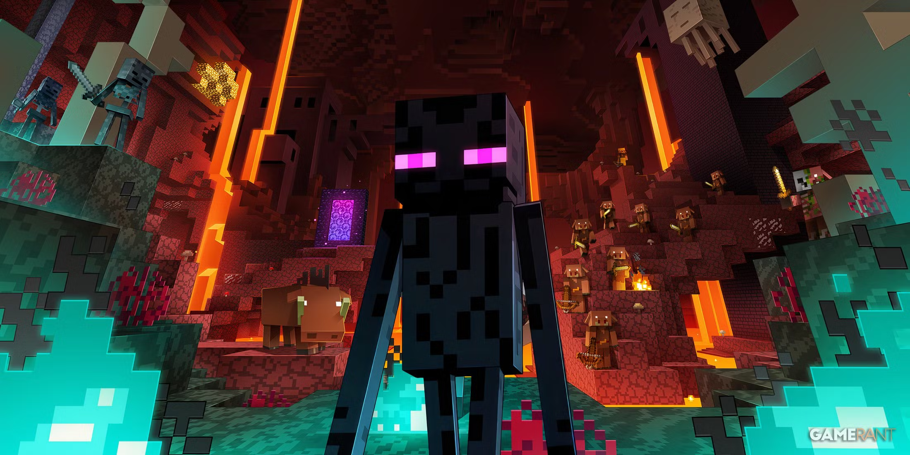
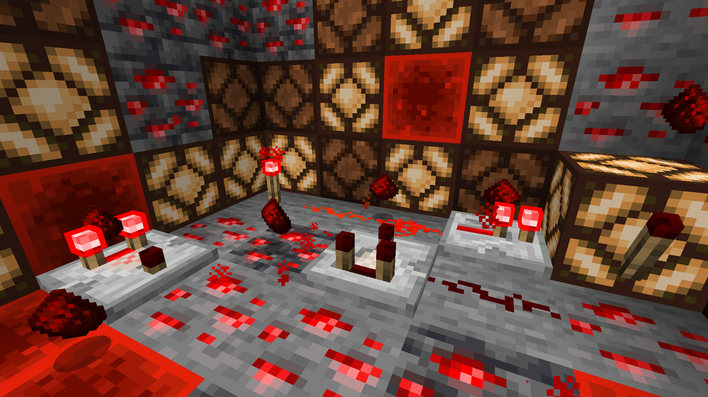

Exploring the Nether
October 5, 2026 by Akio Fearon

The Nether is a dangerous dimension filled with lava, fortresses, and hostile mobs.
It challenges players to prepare carefully before venturing in due to the horrors that lurk in the dark and the ender dragon which awaits.
Despite the danger, its a great place to gather resources like blaze rods and nether quartz.
These materials are essential for brewing and building advanced contraptions, armor, portals and potions.
Building My First Redstone Machine
October 6, 2026 by Akio Fearon

Redstone opens up endless possibilities for automation in Minecraft.
Learning how circuits work is like discovering a new language inside the game. As a matter of fact, one could say that Redstone mimics alot of real-world electrical and engineering systems.
My first contraption was a simple piston door, but it taught me the basics of power sources,
repeaters, and how to design efficient layouts. Who knows? Maybe with practice, it'll substitute for an engineering degree.